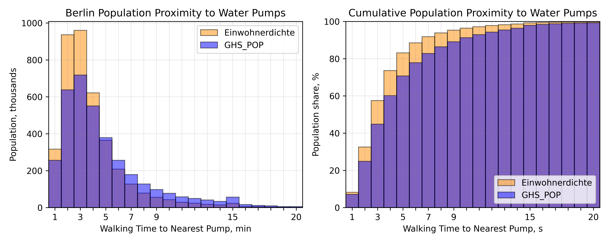
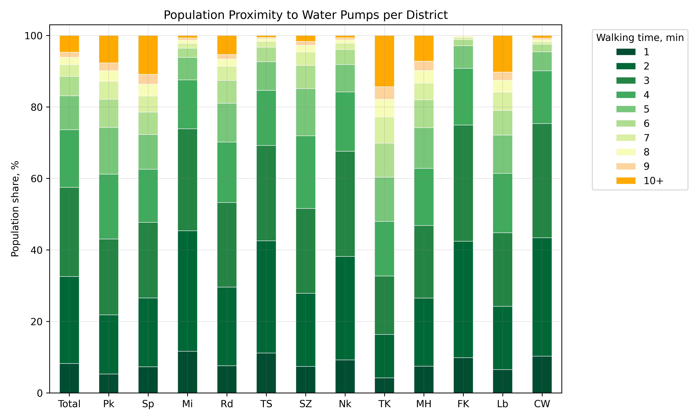

Berlin water wells
This map displays the locations of approximately 2,000 water pumps, part of the
Berlin Street Water Pump network and a few additional drinking water wells marked on OpenStreetMap. These sources are not connected to the central water supply system and serve as an emergency water provision.
Isochrones have been mapped for each water source to visualize the areas reachable within a given walking time.
Population Analysis
To assess the proximity of Berlin's population to these water sources, two datasets were utilized: the Berliner Einwohnerdichte and GHS_POP.

As illustrated in the figure above, over 70% of Berlin's inhabitants live within a 5-minute walking distance from an emergency water source, and about 90% are within a 10-minute range. The GHS_POP model appears to underestimate the peak population density compared to the Einwohnerdichte dataset, yet this does not significantly impact the distribution of proximity.
Water Pump Proximity by District

Analyzing the data per district reveals that central areas of Berlin, such as Mitte, Tempelhof-Schöneberg, and Friedrichshain-Kreuzberg, have more than 90% of their population within a 5-minute distance from an emergency water source. Meanwhile, the larger and more remote districts like Spandau, Treptow-Köpenick, and Pankow show slightly less accessibility but still maintain commendable proximity values.
More info on the project:
GitHub Repository
Data Sources:
[1] OpenStreetMap
Copyright Information
[2] Geoportal Berlin/Einwohnerdichte 2022 (Umweltatlas)
Einwohnerdichte 2022 Umweltatlas WMS,
CC BY 3.0 DE Deed
[3] Schiavina M., Freire S., Carioli A., MacManus K. (2023): GHS-POP R2023A - GHS population grid multitemporal (1975-2030), European Commission, Joint Research Centre (JRC), PID:
http://data.europa.eu/89h/2ff68a52-5b5b-4a22-8f40-c41da8332cfe, doi:10.2905/2FF68A52-5B5B-4A22-8F40-C41DA8332CFE